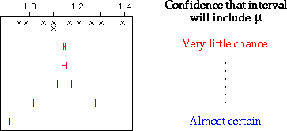

Describing accuracy with an interval estimate
Reporting a single value as a parameter estimate (a point estimate) does not convey any information about the estimator's accuracy — i.e. the likely size of the estimation error.
It is better to give an interval of values within which we are confident that the parameter will lie — an interval estimate.
Will an interval estimate include θ?
If an interval estimate is too narrow, there will be very little chance of it containing the true parameter value, but intervals that are too wide do not convey much information.

We need to find a way to quantify our confidence that any particular interval estimate will include the parameter being estimated.